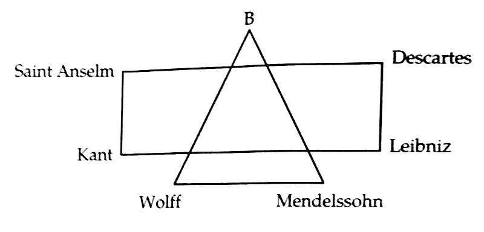
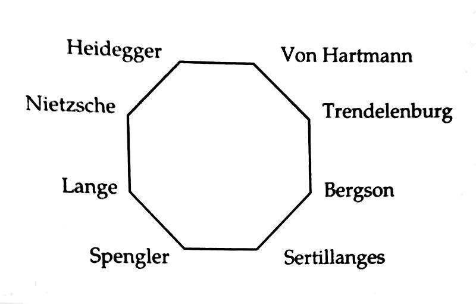

Chương 2

ất tả ngược xuôi, cuối cùng HLV Albut cũng tìm được cho Newton Heath một cơ ngơi mới: SVĐ Bank Street, nằm tại khu Clayton thuộc Manchester. Sân này thuộc quyền sở hữu của CLB điền kinh Bradford & Clayton.Sau mấy vòng đàm phán, đội điền kinh chấp nhận cho đội bóng đá thuê sân trong 8 tháng mỗi năm.
Thoạt nhìn, Bank Street ăn đứt North Road về mọi mặt: Rộng rãi hơn, cơ sở vật chất tốt hơn, mặt sân lại có cỏ! Chỉ hiềm nỗi Clayton là khu công nghiệp, bao quanh Bank Street có đến hơn 30 ống khói lớn nhỏ của các nhà máy sản xuất hóa chất và lò gạch.Trong suốt 17 năm ở Bank Street, không ngày nào cầu thủ Newton Heath khônghít vào khói đen độc hại, và ngửi phải mùi hóa chất hôi nồng. Nhiều khi độ ô nhiễm lên cao, sân bóng rơi vào cái cảnh “sương khói mờ nhân ảnh, áo trắng nhìn không ra”, đứng ở cầu môn bên này nhìn sang bên kia chẳng thấy gì! Mỗi lần thua trận tại Bank Street, cầu thủ đội khách lại ca cẩm: Bọn Newton Heath ăn gian, sân mù những khói thế này, thấy đường nào mà đá?
Ô nhiễm môi trường là vấn nạn lớn của nước Anh trong thời công nghiệp hóa. Ở Manchester nói chung, và Clayton nói riêng, nạn ô nhiễm lại trầm trọng hơn nhiều nơi khác. Manchester bị gán cho hỗn danh “Phố già dơ dáy”, còn Clayton được tặng riêng một bài thơ:
Quỷ Vương bay ngang Clayton trên đường về địa ngục
Bị mùi xú uế, bị khói mai phục
Quỷ Vương than: “Ôi chẳng biết đây là đâu
Nhưng ngửi mùi này, chắc đường về chẳng còn lâu”
Ngoài chuyện ô nhiễm, việc “chuyển nhà” còn làm nảy sinh vấn đề khác: Bank Street không nằm trong khu vực Newton Heath, thế nên cái tên Newton Heath FC không còn phù hợp. CLB nộp đơn xin được đổi tên thành Manchester FC. Không may, lúc ấy đã có một đội bóng khác mang tên này. Họ tìm đến phàn nàn: Này này, cái tên Manchester FC bọn anh đã lấy rồi, các chú xâm phạm bản quyền là không được đâu! Vậy là tạm thời danh xưng Newton Heath vẫn được giữ lại.
1893-1894, mùa bóng đầu tiên tại Bank Street, đánh dấu việc Newton Heath bị rớt xuống Hạng Nhì.Đã rớt hạng, CLB còn bị tờ Birmingham Daily Gazette mắng là chuyên“đá gấu”.Ngày nay, báo chí chỉ trích đội bóng là chuyện rất thường, nhưng bấy giờ, BLĐ Newton Heath lại cảm thấy bị xúc phạm nặng nề.Họ đùng đùng kiện Gazette ra tòa. Kết quả lợi bất cấp hại: Tuy thắng kiện, Newton Heath chỉ được bồi thường danh dự một số tiền tượng trưng, trong khi bị buộc phải thanh toán toàn bộ tiền án phí. Nghèo rồi còn gặp cái eo, ngân quỹ CLB thâm thủng nghiêm trọng, đến nỗi không còn tiền bảo dưỡng sân cỏ nữa. Ngày 9 tháng 3, 1895, Newton Heath đè bẹp Walsall Town Swifts 14-0.Đây lẽ ra là kỷ lục thắng đậm nhất trong lịch sử Manchester United.Song le, vì đối phương khiếu nại lên ban tổ chức là mặt sân quá tệ, không đủ chuẩn thi đấu, kểt quả trên bị hủy.Trong trận tái đấu, tỷ số giảm xuống 9-0.

Newton Heath mùa 1894-1895. Đứng ngoài cùng bên trái là HLV A.H. Albut (Ảnh: Footyposters.co.uk)
Liên tiếp nhiều mùa, Newton Heath ngụp lặn trong giải Hạng Nhì; thành tích tốt nhất của đội chỉ là vài chiếc cúp địa phương “cò con” như Cúp Lancashire. Đá càng kém thì khán giả càng ít đến sân, khán giả ít đến sân thì càng thiếu tiền để đem về cầu thủ giỏi.Thật là cái vòng luẩn quẩn. Năm 1900, James West lên thay Albut trên cương vị HLV, không xoay chuyển được tình hình, mà còn đẩy CLB lao dốc sâu hơn. Mang món nợ lên đến 2670 bảng, con số khổng lồ vào thời đó, Newton Heath đứng trước bờ vực phá sản, phải giải thể.
Đúng lúc này, vị cứu tinh xuất hiện. Vị cứu tinh, dưới dạng một…chú chó![1]
Ngày 27 tháng 2, 1901, đội trưởng Newton Heath, Harry Stafford, đứng ra tổ chức một hội chợ nhằm quyên tiền giúp CLB trả nợ, sự sống còn của đội bóng trông cả vào hội chợ này. Hội diễn ra trong 4 ngày, tại St James’s Hall, trung tâm Manchester. Chẳng những hết bốn ngày không thu được bao nhiêu tiền, mà con chó yêu Major của Stafford còn đi lạc mất tích. Số trời run rủi khiến Major lạc đúng vào nhà ông chủ hãng bia giàu sụ J.H. Davies. Bé gái con của Davies thấy chú chó liền thích mê, nằng nặc đòi cha phải giữ nuôi bằng được.Davies chiều con, nên khi thấy Stafford tìm đến xin lại chó, ông ngỏ ý với anh muốn mua lại Major. Stafford đời nào chịu bán, bởi Major là chó rất khôn và trung thành với chủ, có lần từng xả thân cứu anh thoát chết đuối. Tuy vậy, Stafford đồng ý tặng không Major cho Davies, nếu ông chủ hãng bia chịu đầu tư vào Newton Heath, giúp đội bóng thoát cảnh phá sản.
Davies bản thân đã giàu, ông lại kết hôn với nữ thừa kế của tập đoàn Tate & Lyle hùng mạnh. Cộng tài sản với nhau, hai người là đôi vợ chồng giàu nhất miền Bắc nước Anh. Tuy không mấy hâm mộ bóng đá, Davies thích thể thao nói chung, và rất có lòng với tỉnh nhà. Từng bỏ số tiền lớn tài trợ cho các đội đua xe đạp Manchester, ông nhận thấy cứu giúp Newton Heath cũng là việc nghĩa, nên chấp nhận ngay đề nghị của Stafford.Nói là làm, ông rủ liền ba người bạn doanh nhân cùng hành động, mỗi người bỏ 200 bảng đầu tư vào Bank Street.Đích thân đội trưởng Stafford[2] cũng bỏ tiền túi ra 200 giúp cho CLB.Tháng 3 năm 1902, Davies được bầu vào vị trí chủ tịch Newton Heath.
Trên cương vị lãnh đạo, Davies tiến hành cải tổ CLB từ A đến Z. Đầu tiên là việc thay đổi màu áo. Sau khi thành lập, Newton Heath đổi áo xoành xoạch, từ vàng-xanh nguyên thủy đến trắng đỏ, xanh viền vàng, rồi toàn trắng. Từ 1902, đội chuyển sang mặc áo toàn đỏ, tức sắc màu quen thuộc ngày nay. (Tuy vậy, trong những năm kế tiếp, cũng có khi CLB thử nghiệm những màu mới, như xanh-trắng, đỏ-trắng, trắng có chữ V đỏ, đến 1928 mới thật ổn định với áo toàn đỏ.)
Cùng với đổi áo là đổi tên.Việc này hoãn đã nhiều năm, nay không thể hoãn thêm được nữa. Cái tên Newton Heath rất dễ gây hiểu lầm: Đã có những trường hợp đến giờ thi đấu, cầu thủ ngồi đợi mãi không thấy đội khách đâu, hóa ra họ đáp xe xuống khu vực Newton Heath, thay vì Clayton! Trong đại hội khoáng đại ngày 24 tháng 4, 1902 ở hội trường New Islington, nhiều cái tên mới được đưa ra, như Manchester Celtic hay Manchester Central. Manchester Celtic bị bác bỏ ngay, vì giống Celtic của Scotland, còn Manchester Central cũng không hay, nghe cứ như tên…nhà ga xe lửa. Cuối cùng, mọi người đồng thuận với tên gọi Manchester United. Theo Louis Rocca, chính ông đề xướng tên này.
Louis Rocca là nhân vật độc nhất vô nhị trong lịch sử United, gắn bó với CLB từ thập niên 1890 cho đến tận khi qua đời năm 1950, kinh qua các vị trí…bồi bàn, lao công, cầu thủ, trợ lý HLV, tuyển trạch viên trưởng (chief scout), cùng nhiều công việc linh tinh khác. Nói chung, đội bóng cần gì thì Rocca làm nấy, và làm gì cũng tròn vai. Những cống hiến của ông cho CLB là không nhỏ, mà công lao lớn nhất là việc làm “ông mai” cho mối lương duyên giữa Sir Matt Busby và Old Trafford. Do Rocca gắn bó với United quá lâu, ông được coi như một pho sử sống, không gì không biết.
Vậy nhưng, quá tin Rocca sẽ rất tai hại, bởi Rocca cũng là một chuyên gia…quăng bom. Buổi họp ngày 24 tháng 4 có báo giới tham dự, và nhà báo có bài tường thuật chi tiết các chủ đề được thảo luận. Thông tin trong những bài báo đó đương nhiên đáng tin hơn lời Rocca thuật lại nhiều năm về sau. Chẳng hạn, lật lại báo cũ, ta thấy trên các tờ như The Lancashire Courier, The Manchester Evening News, và The Manchester Guardian đều viết rằng người đề xướng cái tên Manchester United là một “cổ động viên già”. Năm 1902, Rocca chỉ mới 19, 20, không thể nào là “cổ động viên già” được.Như vậy, ai nghĩ ra tên Manchester United?Vấn đề này vẫn chưa, và có lẽ sẽ không bao giờ, xác định được.
Ngày 6 tháng 9, 1902, Manchester United ra quân trận đầu tiên sau khi đổi tên, giành thắng lợi 1-0 trên sân khách trước Gainsborough Trinity. Chủ tịch Davies lên ngân sách chuyển nhượng 3000 bảng cho HLV James West, với mục tiêu đưa United tiến lên Hạng Nhất. Tuy nhiên, cuối mùa 1902-1903, CLB chỉ cán đích ở vị trí thứ 5 giải Hạng Nhì. James West phải ra đi, nhường chỗ cho Ernest Mangnall.
Lịch sử Manchester United cho đến nay trải qua ba hoàng kim thời đại, dưới quyền ba vị HLV lớn. Người thứ ba là Alex Ferguson, thứ hai là Matt Busby, còn thứ nhất chính là Ernest Mangnall.

J.H. Davies, chủ tịch Manchester United trong hoàng kim thời đại thứ nhất. Ông là người cứu CLB khỏi nạn phá sản, sau đó cho xây dựng sân Old Trafford. (Ảnh: Socialregister.co.uk)
[1]Câu chuyện này đã trở thành một dạng huyền thoại, có nhiều dị bản khác nhau, khó đoan xác bản nào đúng nhất.Vậy nên, nếu bạn đọc ở đâu đó có những chi tiết hơi khác với trong sách này, cũng đừng ngạc nhiên.
[2]Stafford là cầu thủ kiêm chủ quán rượu, rất giàu có.